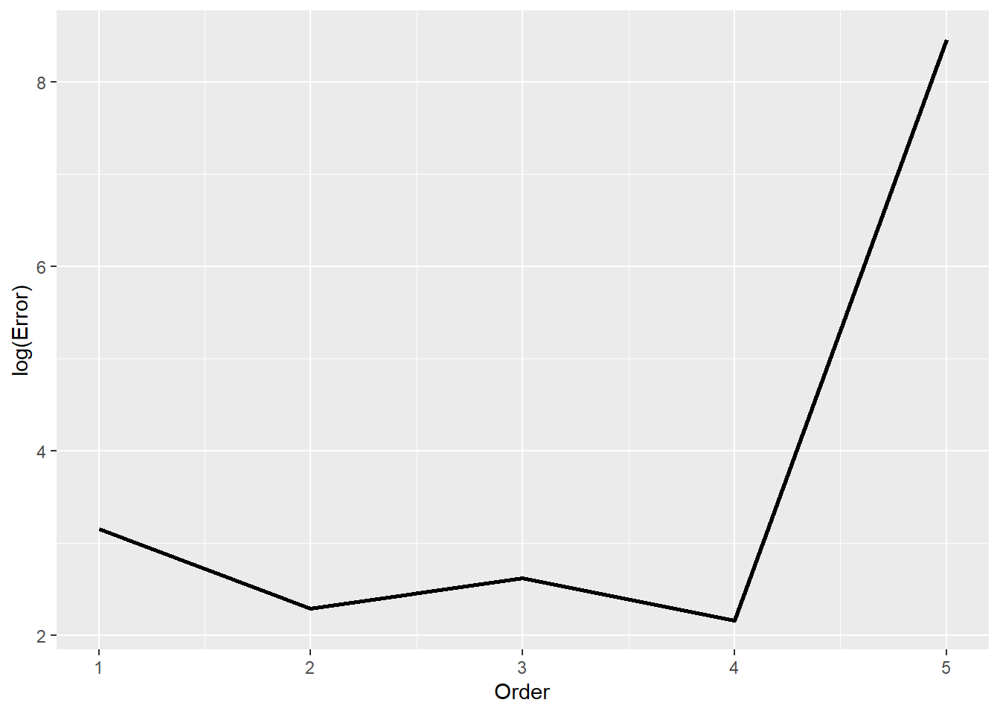
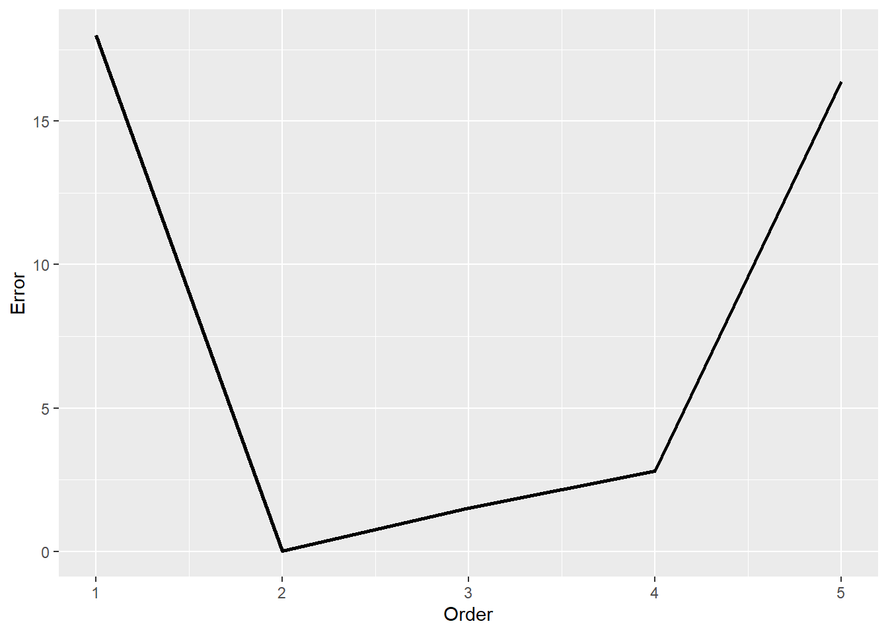

In our discussions of regression the past few weeks, we have encountered many situations in which we needed to make a choice about the model that we fit to data. For example, suppose we have a data set with hundreds or even thousands of predictor variables. This is frequently the case in applications to genetics, where we have thousands of genes, and we want to predict some outcome (e.g., disease status). How do we decide which variables to include in linear regression (or any other prediction model)?
This is an example of model selection, our subject for this week.
34.1 Learning objectives
After this lecture, you will be able to
Explain the problem of variable selection in the context of linear regression
Explain and apply cross-validation methods, including leave-one-out cross-validation and \(K\)-fold cross-validation.
Explain subset selection methods, including forward and backward stepwise selection.
Explain and apply regularization and shrinkage methods, including ridge regression and the LASSO.
34.2 Model selection: overview
Our focus this week will be on model selection for regression problems. Still, we should note that similar ideas apply in many other situations. For example, when clustering data, we use model selection to choose how many clusters to group the data into.
The unifying idea is that we have to choose among many different similar ways of describing the data. That’s what model selection helps us do.
34.3 Variable selection
Suppose that we have a collection of \(p\) predictors, and that \(p\) is very large (say, \(p \approx n\)). If we try to fit a model using all of these predictors, we will end up over-fitting to the data, a point that we have discussed briefly a few times this semester.
If you’ve taken linear algebra (skip this paragraph if not!): in linear regression (a similar story holds for other prediction models), we have \(n\) equations in \(p\) unknowns. When \(p\) is of a similar size to the number of observations \(n\), the system is over-determined (or close to it)..
In situations like this, we would like to choose just a few of these predictors for inclusion in a statistical model (e.g., linear regression). This is an example of model selection: we have a bunch of different models under consideration (i.e., a different possible model for each set of variables we might choose), and we want to pick the best one.
The natural question, then, is: how do we compare models?
34.3.1 Example: mtcars
Let’s consider a very simple example, adapted from Section 3.3.2 and Section 5.1 in ISLR, revisiting our old friend the mtcars data set.
The residuals have a kind of U-shape. This suggests that there is a non-linearity in the data that we are failing to capture. Let’s try adding another predictor: the squared horsepower.
model2 <-lm(mpg ~1+ hp +I(hp^2), mtcars);intercept2 <- model2$coefficients[1];slope2_1 <- model2$coefficients[2];slope2_2 <- model2$coefficients[3];# Plot the data itselfpp <-ggplot( mtcars, aes(x=hp, y=mpg)) +geom_point();# As usual, there are cleaner ways to do this plot, but this is the quick and easy way to make itt.# If we were doing this more carefully, we would evaluate the cureve in the plot at more x-values than just the ones in the data to smooth things out.pp <- pp +geom_line( aes(x=hp, y=intercept2 + slope2_1*hp + slope2_2*I(hp^2) ), colour='red' );pp
That looks like quite an improvement! Just for comparison:
Why stop there? Why not add hp^3 as well, or even hp^4? Well, funny enough, that is precisely the idea behind polynomial regression, which you can learn more about in ISLR (Section 3.3.2; more substantial discussion in Chapter 7) or in a regression course.
But that raises the question: how do we know when to stop?
-You’ll find that if you add hp^3 to the model above, that the sum of squared residuals does indeed improve.
-But how do we know if that improvement is worth it?
One approach to this problem would be to examine the \(p\)-values associated to the coefficients (see ISLR Chapter 3 for a discussion of that approach). In these notes, we will see a different, arguably more principled approach.
34.3.2 Overfitting and Unseen Data
If we keep adding more predictors to our model, the residuals will continue to decrease, but this will not actually mean that our model is better. Instead, what we will be doing is over-fitting to the data. That is, our model will really just be “memorizing” the data itself rather than learning a model.
The true test of model quality is how well it does at predicting for data that we didn’t see.
That is, if we fit our model on data \((X_i,Y_i)\) for \(i=1,2,\dots,n\), how well does our model do on a previously unseen data point \((X_{n+1},Y_{n+1})\)?
Specifically, in the case of regression, we want our model to minimize \[
\mathbb{E} \left( \hat{Y}_{n+1} - Y_{n+1} \right)^2,
\]
where \(\hat{Y}_{n+1}\) is our model’s prediction based on coefficients estimated from our \(n\) training observations.
34.4 Validation Sets
So rather than focusing on how well our model fits our training data, we should be trying to determine how well our model does when it gets applied to data that we haven’t seen before.
Specifically, we would like to know the mean squared error (MSE), \[
\mathbb{E} \left( \hat{Y}_{n+1} - Y_{n+1} \right)^2.
\]
Note: The name is hopefully clear– it is the expectation (mean) of the squared error between our prediction and the truth.
If you’ve taken an ML course, this idea should already be quite familiar. We always train (“fit” in the language of statistics) our model on a training set, and then assess how well the model performs on a test set that our model hasn’t seen before.
The trouble is that in most statistical problems, we have at most a few hundred data points to work with. As a result, we can’t really afford to set aside some of our data just to use as a test set.
Note that this is in contrast to many machine learning settings (e.g., training a neural net), where we often have tens or hundreds of thousands of data points to work with.
Following the logic of the train/test split idea in ML, though, a natural approach is to do the following:
Split our data into two parts, say \(S_1,S_2\), such that \(S_1 \cup S_2 = \{1,2,\dots,n\}\) and \(S_1 \cap S_2 = \emptyset\).
Obtain estimate \(\hat{\beta}_1\) by fitting a model on the observations in \(S_1\)
Evaluate the error of our fitted model on \(S_2\), \[
\hat{E}_1
=
\frac{1}{|S_2|} \sum_{i \in S_2} \left( Y_i - \hat{\beta}_1 X_i \right)^2.
\]
Typically, we call \(S_2\), the set that we make predictions for, the validation set, because it is validating our model’s performance.
34.4.1 Example: mtcars revisited
Let’s see this in action on the mtcars data set.
We randomly split the data set into two groups. For each model order 1, 2, 3, 4 and 5, we fit the model to the training set and then measure the sum of squared residuals of that model when applied to the validation set.
One run of this experiment is summarized in resids_onerun. For details, refer to mtcars_poly.R, which is included among the supplementary files for this lecture.
Warning: Using `size` aesthetic for lines was deprecated in ggplot2 3.4.0.
ℹ Please use `linewidth` instead.
pp

Let’s pause to make sure that we understand what this plot actually shows. We split the mtcars dataset randomly into two sets, a “training” set and a “validation” set. For each order (1, 2, 3, 4, 5), we fit a model of that order to the training set. Then we use that model to try and predict the outcomes (mpg) on the validation set. So this is the performance of five different models, each trained on the same data \(S_1\) and evaluated on the same data \(S_2\), different from the training data.
Looking at the plot, we see that as we add higher-order powers of hp, we don’t really gain much in terms of the error (i.e., sum of squared residuals) beyond order 2. Indeed, past the order-3 model, the error gets worse again!
Aside: this deteriorating performance is due largely to the fact that the mtcars data set is so small. Once we split it in half, we are fitting our model to just 16 observations. Estimating four or five coefficients from only about 15 observations is asking for trouble! This is a tell-tale sign of over-fitting of a model. This would be a good occasion for some kind of regularization, but we’ll come back to that.
34.4.2 Variance in the residuals
There’s one problem, though, beyond matters of sample size. That plot shows the residuals as a function of model order for one particular random set \(S_1\). Let’s plot the same residuals for a few different random sets.
Note: the data frame resids contains multiple replicates of the above experiment. Once again, refer to the code in mtcars_poly.R for details.
Hmm. There’s quite a lot of variance among our different estimates of the prediction error. Note that the y-axis is on a log scale, so an increase from, say, 2 to 3 is an order of magnitude increase in error.
Each of these is supposed to be estimating the error \[
\mathbb{E} \left( \hat{Y}_{n+1} - Y_{n+1} \right)^2,
\]
but there’s so much variation among our estimates that it’s hard to know if we can trust any one of them in particular!
Indeed, the variance is so high that we needed to plot the error on a log scale! Once in a while, we get unlucky and pick an especially bad train/validate split, and the error is truly awful!
Question: what explains the variance among the different lines in that plot?
Question: How might we reduce that variance?
34.5 Reducing the variance: Leave-one-out cross-validation
One source of variance in our cross-validation plots above was the fact that each replicate involved splitting the data in half and training on only one of the two halves.
That means that on average, from one replicate to another, the data used to train the model changes quite a lot, and hence our estimated model changes a lot. That’s where the variance comes from in the plot we just looked at!
There is also the related problem that we are training on only half of the available data. As statisticians and/or machine learners, we don’t like not using all of our data!
So, here’s one possible solution: instead of training on half the data and validating (i.e., evaluating the model) on the other half, let’s train on all of our data except for one observation, then evaluate our learned model on that one held-out data point.
That is, instead of splitting our data into two halves, we
Take one observation and set it aside (i.e., hold it out)
Train our model on the other \(n-1\) observations
Evaluate our model on the held-out observation.
This is called leave-one-out cross-validation (LOO-CV).
# This R file implements the same experiment as we saw above,# but this time doing LOO-CV instead of a naive two-set split.source('r_scripts/mtcars_poly_loocv.R');pp <-ggplot(resids_onerun, aes(x=Order, y=Error ) );pp <- pp +geom_line( size=1)pp

But once again, that’s just one run. Let’s display several of them in one plot.
For each of our replicates, we are estimating our model based on \(n-1\) of the observations, and then evaluating our prediction on the one held-out observation.
But now we have a different kind of variance: our estimate of the error is at the mercy of the one observation that we chose to hold out. If we chose an especially “bad” or “challenging” observation to hold out, then our error might be especially high.
Leave-one-out cross-validation (LOO-CV) tries to bridge this gap (i.e., balancing the better stability of leaving one observation out with the variability induced by evaluating on a single point) by:
For each \(i=1,2,\dots,n\):
Train the model on \(\{ (X_j, Y_j) : i \neq i \}\).
Evaluate on \((X_i, Y_i)\).
Average the model error over all \(i =1,2,\dots,n\).
This illustration from ISLR should give you the general idea.
Schematic of LOO-CV (Credit: ISLR2e fig. 5.3)
Let’s see that in action. As we have done many times this semester, this code is optimized for clarity and readability, not for concision or “cleverness”. There are much more “graceful” ways of doing this, and shortly we’ll see R’s built-in CV tools, which are what we would normally use for this. But here the goal is to illustrate the core ideas in a really obvious way, hence the “clumsy” code.
data('mtcars'); # Still using mtcars data; reloading it just to remind us.nrows <-nrow(mtcars); # Number of observations in the datanorder <-5;# For each choice of observation to hold out, we need to record the score# (i.e., squared erro) for each of the five model orders.errors <-data.frame( 'Row'=rep(1:nrows, each=norder),'Order'=rep(1:norder, times=nrows),'Error'=rep(NA, nrows*norder));for ( i in1:nrow(mtcars) ) { train_data <- mtcars[-c(i),]; # Leave out the i-th observation leftout <- mtcars[c(i),]; # the row containing the left-out sample.# Remember, we are fitting five different models# So that we can compare them.# Fit the linear model, then evaluate. m1 <-lm(mpg ~1+ hp, train_data ); m1.pred <-predict( m1, leftout ); idx <- (errors$Row==i & errors$Order==1); # Pick out row of the errors df.# record squared error btwn predict and truth errors[idx,]$Error <- (m1.pred - leftout$mpg)^2 ; # Fit the quadratic model, then evaluate. m2 <-lm(mpg ~1+ hp +I(hp^2), train_data ); m2.pred <-predict( m2, leftout ); idx <- (errors$Row==i & errors$Order==2); # Pick out row of the errors df.# record squared error btwn predict and truth errors[idx,]$Error <- (m2.pred - leftout$mpg)^2; # Fit the cubic model, then evaluate. m3 <-lm(mpg ~1+ hp +I(hp^2) +I(hp^3), train_data ); m3.pred <-predict( m3, leftout ); idx <- (errors$Row==i & errors$Order==3); # Pick out row of the errors df.# record squared error btwn predict and truth errors[idx,]$Error <- (m3.pred - leftout$mpg)^2; # Fit the 4-th order model, then evaluate. m4 <-lm(mpg ~1+ hp +I(hp^2) +I(hp^3) +I(hp^4), train_data ); m4.pred <-predict( m4, leftout ); idx <- (errors$Row==i & errors$Order==4); # Pick out row of the errors df.# record squared error btwn predict and truth errors[idx,]$Error <- (m4.pred - leftout$mpg)^2; # Fit the 5-th order model, then evaluate. m5 <-lm(mpg ~1+ hp +I(hp^2) +I(hp^3) +I(hp^4) +I(hp^5), train_data ); m5.pred <-predict( m5, leftout ); idx <- (errors$Row==i & errors$Order==5); # Pick out row of the errors df.# record squared error btwn predict and truth errors[idx,]$Error <- (m5.pred - leftout$mpg)^2;}
Okay, so let’s make sure that we understand what is going on, here.
The data frame errors now has nrows*norders rows. So for each observation in the cars data set, there are five entries in the table errors, recording the squared error for the models of order 1, 2, 3, 4 and 5 when that data point was held out.
We said that when we do CV, we want to average across the \(n\) observations, so let’s do that. We’re going to use the aggregate function, which is one of the ways to perform “group-by” operations in R.
Group-by operations are where we pool our observations into subsets according to some criterion, and then compute a summary statistic over all of the observations in the same subset (i.e., the same “group”).
Using that language, we want to group the rows of errors according to model order, and take the average squared error within each order.
# Error ~ Order tells R to group the data according to the Order column# and that we want to summarize the Error column within observations# of the same Order.# Passing the FUN=mean argument tells R that the summary statistic we want to use# is the function mean().# We could pass other summary statistic functions in this argument.# For example, we could use median, sd, var, max, etc.,# though those would be a bit silly here.err_agg <-aggregate(Error ~ Order, data=errors, FUN=mean);head(err_agg)
So far we have seen two different ways of estimating a model’s performance on unseen data.
The first was to randomly split the data into two sets, train on one and evaluate on the other.
Pro: Only have to fit a model once (or just a few times, if we are going to repeat the operation and average)
Con: Only have half of the data available to fit the model, which leads to less accurate prediction (and thus high variance in estimated model).
The second is leave-one-out cross-validation.
Pro: Use all but one observation to fit the model, so model fit is almost as good as if we had used all of the data
Con: Have to fit the model anew for each held-out data point, results in fitting the model \(n\) different times, which can be expensive.
Con: Because any two training sets overlap in all but one of their elements, our fitted models are very highly correlated with one another, so we’re doing a lot of work (\(n\) model fits) to get a bunch of highly correlated measurements.
So, the natural question is: can we bridge the gap between these two extremes.
34.5.2 The happy medium: \(K\)-fold cross validation
Well, there are a few different ways to bridge this gap, for example using Monte Carlo methods. Let’s discuss the most popular one here.
We’ll borrow a bit from the LOO-CV idea, while lessening the correlatedness of the models fits.
\(K\)-fold CV randomly divides the data into \(K\) subsets, called folds. Then, one at a time, we hold out one of the folds, train our model on the \(K-1\) remaining folds, and evaluate our model’s prediction error on the held-out fold. Then, we can average the errors across the \(K\) folds.
That is, the “recipe” for \(K\)-fold cross-validation is
Randomly partition the data into \(K\) (approximately) same-sized subsets, \(S_1,S_2,\dots,S_K\) such that \(\cup_k S_k = \{1,2,\dots,n\}\) and \(S_k \cap S_\ell = \emptyset\) for all \(k \neq \ell\)
For each \(k=1,2,\dots,K\), train a model on the observations indexed by \(i \in \cup_{\ell \neq k} S_\ell\) and compute the prediction error \[
\hat{E}_k = \frac{1}{|S_k|} \sum_{i \in S_k} (\hat{y}_i - y_i)^2
\]
Estimate the true error \(\mathbb{E} (\hat{y}_{n+1} - y_{n+1})^2\) as \[
\frac{1}{K} \sum_{k=1}^K \hat{E}_k,
\] Schematically, this looks something like this (with \(K=5\)):
Schematic of \(K\)-fold CV (Credit: ISLR2e fig. 5.5)
Let’s implement this in R, just for the practice. Once again, R has built-in tools for making this easier, which we will discuss later, but this is a good opportunity to practice our R a bit.
data('mtcars'); # We'll continue to use the mtcars data setK <-5; # 5-fold regularization. K between 5 and 10 is a fairly standard choice# The first thing we need to do is partition the data into K folds.# There are many different ways to do this,# including using functions from other packages# (e.g., https://www.rdocumentation.org/packages/caret/versions/6.0-90/topics/trainControl)# But here's an approach using the R function split() that I liken <-nrow(mtcars);# sample(n,n,replace=FALSE) really just randomly permutes the data.# Then, passing that into the split function assigns these to the K different# factors defined by as.factor(1:K).# See ?split for more information.Kfolds <-split( sample(1:n, n,replace=FALSE), as.factor(1:K));
Warning in split.default(sample(1:n, n, replace = FALSE), as.factor(1:K)): data
length is not a multiple of split variable
# Note that this will throw a warning in the event that K does not divide n# evenly. That's totally fine!Kfolds
Now, for each of these \(K=5\) folds, we’ll set it aside, train on the remaining data, and evaluate on the fold.
# The file mtcars_Kfold.R defines a function that trains the five different-order# models and evaluates each one according to the given holdout set.# It largely repeats the structure of the LOO-CV code implemented above,# hence why it is relegated to a file for your later perusal.source('r_scripts/mtcars_Kfold.R');# Set up a data frame to hold our residuals.norder <-5;Kfold_resids <-data.frame( 'Order'=rep(1:norder, each=K),'Fold'=rep(1:K, norder ),'Error'=rep(NA, K*norder) );for (k in1:K ) { heldout_idxs <- Kfolds[[k]]; # The indices of the k-th hold-out set.# Now train the 5 different models and store their residuals. idx <- (Kfold_resids$Fold==k); Kfold_resids[idx, ]$Error <-mtcars_fit_models( heldout_idxs );}head(Kfold_resids)
Now, we need to aggregate over the \(K=5\) folds, and then we can plot the errors. Once again, we need to use a log scale for the errors, because the higher-order models cause some really bad prediction errors on a handful of “bad” examples.
Once again, the order-2 model, mpg ~ 1 + hp + hp^2, does best (usually, anyway– occasionally the order-3 model is slightly better due to randomness on this small data set).
34.6 Aside: the bias-variance decomposition
Note: This subsection includes a lot of math, including a lot of expectation and variance terms and taking expectations with respect to some variables but not others. You are not responsible for these details on an exam. The important thing to take away from this subsection is the concept of the bias-variance decomposition of the means squared error (MSE), in which we can write the MSE as a variance term plus a squared bias.
Suppose that we have a quantity \(\theta\) that we want to estimate, and we have an estimator \(\hat{\theta}\), the mean squared error is defined as \[
\operatorname{MSE}(\hat{\theta}, \theta)
= \mathbb{E} \left( \hat{\theta} - \theta \right)^2.
\]
For example, in our CV examples above, we wanted to estimate the squared error on a previously unseen data point, \(\mathbb{E}( \hat{Y}_{n+1} - Y_{n+1} )^2\). Note that even though this looks kind of like MSE, it is not. This quantity is \(\theta\) in our MSE expression above. It is a thing we want to estimate. Our love of squared errors has caused us to have a whole mess of colliding notation. Such is life.
Important point: we are taking expectation here with respect to the random variable \(\hat{theta}\). Its randomness comes from the data itself (which we usually assume to depend on the true parameter \(\theta\) in some way).
Now, let’s expand the MSE by adding and subtracting \(\mathbb{E} \hat{\theta}\) inside the square: \[
\newcommand{\E}{\mathbb{E}}
\newcommand{\thetahat}{\hat{\theta}}
\begin{aligned}
\operatorname{MSE}
&= \E \left( \thetahat - \theta \right)^2 \\
&= \E \left( \thetahat - \E \thetahat + \E \thetahat - \theta \right)^2 \\
&= \E\left[ \left( \thetahat - \E \thetahat \right)^2
+ 2\left( \thetahat - \E \thetahat \right)\left( \E \thetahat - \theta \right)
+ \left( \E \thetahat - \theta \right)^2 \right] \\
&= \E \left( \thetahat - \E \thetahat \right)^2
+ \E 2\left( \thetahat - \E \thetahat \right)
\left( \E \thetahat - \theta \right)
+ \E \left( \E \thetahat - \theta \right)^2.
\end{aligned}
\] Now, let’s notice that \(\theta\) and \(\mathbb{E} \hat{\theta}\) are not random, so they can get pulled out of the expectation (along with the factor of \(2\), which is also not random!). we can write (again, remember that the expectation is over \(\hat{\theta}\), while \(\theta\) is non-random) \[
\newcommand{\E}{\mathbb{E}}
\newcommand{\thetahat}{\hat{\theta}}
\E 2\left( \thetahat - \E \thetahat \right) \left( \E \thetahat - \theta \right)
= 2 \left( \E \thetahat - \theta \right) \E \left( \thetahat - \E \thetahat \right)
= 0,
\] because \[
\mathbb{E}\left(\hat{\theta} - \mathbb{E} \hat{\theta} \right)
= \mathbb{E} \hat{\theta} - \mathbb{E} \hat{\theta}
= 0.
\]
Plugging this into our equation above, we conclude that \[
\newcommand{\E}{\mathbb{E}}
\newcommand{\thetahat}{\hat{\theta}}
\operatorname{MSE}
= \E \left( \thetahat - \E \thetahat \right)^2
+ \E \left( \E \thetahat - \theta \right)^2.
\]
The first term on the right is just a variance– like \(\mathbb{E}(X - \mathbb{E}X)^2\).
The second term on the right is the expectation of \((\mathbb{E} \hat{\theta} - \theta)^2\). But this term isn’t random at all– \(\theta\) is a fixed parameter, and \(\mathbb{E} \hat{\theta}\) is just an expected value (i.e., not random!), so \[
\E \left( \E \thetahat - \theta \right)^2
= \left( \E \thetahat - \theta \right)^2,
\] and notice that this is just the squared bias– the square of the difference between the expectation of our estimator and the thing it is supposed to estimate.
So, to recap, we have shown that we can decompose the MSE as \[
\operatorname{MSE}(\hat{\theta}, \theta)
= \operatorname{Var} \hat{\theta} + \operatorname{Bias}^2(\hat{\theta}, \theta).
\]
In general, there will be many different estimators (i.e., many different choices of \(\hat{\theta}\)) that all obtain (approximately) the same MSE. The above equation means that once we are choosing among these different “similar” estimators (i.e., estimators that have similar MSE), we are really just trading off between bias and variance. That is, an estimator with smaller bias will have to “pay” for it with more variance. This is often referred to as the bias-variance tradeoff.
34.7 CV and the bias-variance tradeoff
Now, the purpose of cross-validation is to estimate the model error \(\E(\hat{Y}_{n+1}-Y_{n+1})^2\). The bias-variance tradeoff says that, roughly speaking, different “reasonable” ways of estimating this quantity will all have about the same MSE, but will involve balancing bias against variance.
34.7.1 Bias in CV
Let’s think back to the “naive” cross-validation approach, in which we split the data into two sets of similar sizes, train on one and evaluate on the other. When we do that, we train our model on a much smaller data set than if we used the full data. The result is that we (accidentally) over-estimate the error of our model, because models trained on less data simply tend to be less accurate.
That is to say, the “naive” cross-validation approach tends to yield a biased estimate of the true error of the model. Specifically, our estimate is biased upward.
On the other hand, LOOCV should be approximately unbiased as an estimate of the model error, because the difference between training on \(n\) and \(n-1\) data points should not be especially large (at least once \(n\) is reasonably large).
It stands to reason that \(K\)-fold CV should sit at a kind of “happy medium” level of bias between LOOCV and “naive” CV.
34.7.2 Variance in CV
So LOOCV is the least biased estimate of model error, but the bias-variance trade-off predicts that we must “pay” for this in variance. It turns out that LOOCV has the most variance out of the three methods LOOCV, \(K\)-fold CV (for \(K < n\)) and “naive” CV.
Intuitively, the variance in LOOCV comes from the following fact: recall that for each \(i=1,2,\dots,n\), we hold out the \(i\)-th data point and train a model on the rest.
This means that we have \(n\) different trained models, each trained on \(n-1\) data points, but each pair of training sets overlap in \(n-2\) of their data points. The result is that the trained models are highly correlated with one another. Changing just one data point in our data set doesn’t change the fitted model much!
The result is that these estimated model errors are highly correlated with one another, with the result that our overall estimate of the model error has high variance.
The \(K\) models trained in \(K\)-fold CV are less correlated with one another, and hence we have (comparatively) less variance. It turns out in this case that \(K\) less-correlated error estimates have smaller correlation than \(n\) highly-correlated ones.
34.7.3\(K\)-fold CV: the happy medium
Thus, \(K\)-fold CV is a popular choice both because it is computationally cheaper than LOOCV (\(K\) model fits compared to \(n\) of them) and because it strikes a good balance between bias and variance.
34.8 Variable selection, for real this time
In our examples above, we concentrated on choosing among a family of linear regression models that varied in their orders, in the sense that they included as predictors all powers of the horsepower variable hp, up to some maximum power, to predict gas mileage. Hopefully it is clear how we could modify our approach to, say, choose which variables we do and don’t include in a model (e.g., as in the Pima diabetes data set that we’ve seen a few times this semester).
Ultimately, our goal was to choose, from among a set of predictors that we could include in our model (e.g., powers of hp, in the case of the mtcars example), which predictors to actually include in the model. Again, this task is variable selection.
One thing that might be bugging us so far is that any way we slice it, cross-validation doesn’t use all of the available data: we are always holding something out of our fitted model for the sake of estimating our error on unseen data.
Let’s look at a few different approaches to variable selection that do not rely on cross-validation. These alternative methods have the advantage of not trying to estimate the unknown model error on unseen data. On the other hand, these methods can be more computationally intensive and tend to come with fewer theoretical guarantees.
This is not to suggest, however, that these methods are at odds with cross-validation. In actual research papers and in industry applications, you’ll often see both CV and some of the methods presented below used in tandem to select the best model for the job.
34.9 Setup: linear regression and fitting
Let’s continue to focus on linear regression, bearing in mind that the ideas introduced here apply equally well to other regression and prediction methods (e.g., logistic regression). Let’s recall that multiple linear regression models a response \(Y \in \mathbb{R}\) as a linear (again, technically affine– linear plus an intercept!) function of a set of \(p\) predictors plus normal noise: \[
Y = \beta_0 + \beta_1 X_1 + \beta_2 X_2 + \cdots + \beta_p X_p + \epsilon.
\]
Here, \(\epsilon\) is mean-zero normal with unknown variance \(\sigma^2 > 0\), and the variables \(X_1,X_2,\dots,X_p\) are the predictors. We often refer to \(p\), the number of predictors, as the dimension of the problem, because the data (well, the vector of predictors, anyway), lies in \(p\)-dimensional space. Collecting the coefficients into a vector \((\beta_0,\beta_1,\dots,\beta_p) \in \mathbb{R}^{p+1}\) and creating a vector \(X=(1,X_1,X_2,\dots,X_p) \in \mathbb{R}^p\), we can write this more succinctly as (if you have not taken linear algebra, you can safely ignore this, we’re just including it because it’s a common notation) \[
Y = \beta^T X + \epsilon.
\]
In multiple linear regression, we observe a collection of predictor-response pairs \((X_i,Y_i)\) for \(i=1,2,\dots,n\), with \[
X_i = (1,X_{i,1},X_{i,2},\dots,X_{i,p}) \in \mathbb{R}^{p+1}.
\]
Note that here we are including the intercept term \(1\) in the vector of predictors for ease of notation. This is a common notational choice, so we’re including it here to get you used to seeing this. Of course, this is not universal– it’s one of those conventions that you have to be careful of and check what you are reading.
34.9.1 Recap: variable selection
So we have \(p\) variables (plus an intercept term), and we want to select which ones to include in our model. There are many reasons to want to do this, but let’s just highlight three of them:
If there are many “useless” variables (i.e., ones that are not good predictors of the response), then including them in the model can make our predictions less accurate. Thus, we would like to proactively identify which variables are not useful, and avoid including them in the model in the first place.
A model with fewer variables is simpler, and we like simple models! Explaining, say, heart attack risk as a function of two or three factors is a lot easier to use than a model that uses ten or twenty factors.
If the number of predictors \(p\) is too large (say, larger than \(n\)– a common occurrence in genomic studies, for example), our estimates of the coefficients are very unstable. Variable selection and related tools give us a way to introduce stability in the form of regularization, which we will talk about below.
34.10 Best subset selection
So, we have \(p\) predictor variables available to us, and we want to choose which of them to actually include in our model.
Well, the most obvious solution is to just try all possible combinations of features, train a model using each combination, and keep the best one (measured by, say, residual sum of squares).
This would have an obvious drawback: we have already seen that we can trivially improve the RSS of our model by adding variables. So the models that include more variables would do better, even if those variables did not actually lead to better model error on unseen data.
The solution to this is to do the following:
For each \(k=1,2,\dots,p\), for every set of \(k\) different variables, fit a model and keep the model that best fits the data (measured by RSS). Call this model \(M_k\).
Use CV (or some other tool like AIC or adjusted \(R^2\), which we’ll discuss below) to select among the models \(M_1,M_2,\dots,M_p\).
This is called best subset selection. It is implemented in R in, for example, the leaps library the function regsubsets, which gets called in more or less the same way as lm. See (here)[https://cran.r-project.org/web/packages/leaps/index.html] for documentation if you’re interested.
There is one rather glaring problem with best subset selection, though:
Question: if there are \(p\) predictors, how many models does best subset selection fit before it makes a decision?
So once \(p\) is even moderately large, best subset selection is computationally expensive, and we need to do something a little more clever.
34.11 Stepwise selection
So best subset selection is expensive because we have to try every possible model, and then choose among the best “size-\(k\)” model for each \(k=1,2,\dots,p\). How might we cut down on the computational expense?
Stepwise selection methods avoid exhaustively checking all \(2^p\) possible models by starting with a particular model and adding or removing one variable at a time (i.e., in “steps”).
The important part is in how we decide which predictor to add or remove from the model at a particular time.
34.11.1 Forward stepwise selection
The most obvious (to me, anyway) way to avoid checking every possible model is to start with a “null” model (i.e., no predictors, just an intercept term), then repeatedly add the “best” predictor not already in the model. That is,
Start by fitting the “null” model, with just an intercept term. Call it \(M_0\).
For each \(k=1,2,\dots,p\), among the \(p-k\) predictors not already in the model, add the one that yields the biggest improvement in RSS. Call this model, which includes \(k\) predictors and the intercept term, \(M_k\).
Use CV or some other method (e.g., an information criterion; see ISLR Section 6.1) to choose among \(M_0,M_1,M_2,\dots,M_p\).
The important thing is that in Step 2 above, for each \(k=1,2,\dots,p\), we need to fit \(p-k\) different models. Thus, in total (i.e., summing over \(k=0,1,2,\dots,p\)), we end up fitting \[
1+ \sum_{k=0}^{p-1} (p-k)
= 1+p^2 - \frac{(p-1)p}{2} = 1+\frac{ 2p^2 - p^2 + p }{2}
= 1+ \frac{ p(p+1)}{2}
\] different models.
To get a sense of what a big improvement this is, when \(p\) is large, this right-hand side is approximately \(p^2/2\). Compare that with \(2^p\), which is a MUCH larger number. For example, when \(p=10\), \(2^{10} \approx 1000\), while \(10^2/2 \approx 50\). When \(p=20\), \(2^{20} \approx 1,000,000\) while \(20^2/2 \approx 200\).
Of course, the drawback is that forward stepwise selection might “miss” the optimal model, since it does not exhaustively fit every possible model the way that best subset selection does.
34.11.2 Backward stepwise selection
Well, if we can do forward stepwise selection, why not go backwards?
In backward stepwise selection, we start with the full model (i.e., a model with all \(p\) predictors), and iteratively remove one predictor at a time, always removing the predictor that decreases RSS the least.
Just like forward stepwise regression, this decreases the number of models we have to fit from \(2^p\) to something more like (approximately) \(p^2/2\).
Cautionary note: backward selection will only work if the number of observations \(n\) is larger than \(p\). If \(n < p\), the “full” model cannot be fit, because we have an overdetermined system of linear equations– \(n\) equations in \(p\) unknowns, and \(p > n\). This is a setting where regularization can help a lot (see below), but the details are best left to your regression course(s).
34.11.3 Hybrid approaches: the best of both worlds?
It is outside the scope of this course, but there do exist stepwise selection methods that try to combine forward and backward stepwise selection. For example, we can alternately add and remove variables as needed. This can be helpful when, for example, a predictor is useful “early” in the selection process, but becomes a less useful predictor once other predictors have been included.
34.12 Model Comparison Statistics: Adjusted \(R^2\), AIC and BIC
Rather than comparing the RSS of two models, which only compares the reduction to residuals with no regards to the number of predictors (the complexity) in the model, there are some statistics that are often used. Note that these statistics are relevant when comparing models of different complexity - two models with the same number of predictors would just as well be compared using \(RSS\). These statistics are useful to balance the benefit of reduced \(RSS\) with the cost of additional model complexity.
In each case, \(k\) is the number of parameters being estimated - including the intercept.
34.12.1 Adjusted \(R^2\)
\[R^2_{adj} = 1 − \frac{RSS/(n-k)}{TSS/(n-1)}=1-\frac{RSS}{TSS}\left(\frac{n-1}{n-k}\right)\] The fraction multiplied will be \(>1\), and grows with model complexity. In an extreme case, this penalty can result in a negative \(R^2_{adj}\), so it’s important to remember that this statistic is not meaningful by itself, only when used to compare models. Thus \(R^2_{adj} < R^2\), and applies a penalty that grows with the number of predictors. When comparing two models using \(R^2_{adj}\) we prefer the model that has the higher value.
34.12.2 Akaike information criterion (AIC)
\[AIC = −2 \ln(L) + 2k\] If you work out the math (we won’t here) for a linear model this can be expressed in terms of \(RSS\)\[AIC = n\ln(RSS/n) + 2k\]
34.12.3 Bayesian information criterion (BIC)
\[BIC = -2 \ln(L)+\ln(n)k = n\ln(RSS/n) + \ln(n)k\] The first term in AIC and BIC is the residual deviance, which we want to be as low as possible. While a more complex model will reduce residual deviance, both AIC and BIC add a penalty. BIC adds a more severe penalty per predictor (if \(n > e^2\approx7.4\)).
The bottom line: between these three model comparison statistics, BIC more heavily favors simpler models, \(R^2_{adj}\) allows for more complex models and AIC is somewhere in the middle.
34.13 Shrinkage and Regularization
The variable selection methods we just discussed involved trying out different subsets of the predictors and seeing how the model performance changed as a result.
Let’s consider an alternative approach. What if instead of trying lots of different models with different numbers of predictors, we went ahead and fit a model with all \(p\) available predictors, but we modify our loss function in such a way that we will set the coefficients of “unhelpful” predictors to zero? This is usually called “shrinkage”, because we shrink the coefficients toward zero. You will also often hear the term regularization, which is popular in machine learning, and means more or less the same thing.
Let’s briefly discuss two such methods, undoubtedly two of the most important tools in the statistical toolbox: ridge regression and the LASSO.
34.13.1 Ridge regression
By now you are bored to death of seeing the linear regression least squares objective, but here it is again: \[
\sum_{i=1}^n \left( Y_i - \beta_0 - \sum_{j=1}^p \beta_j X_{i,j} \right)^2
\]
Here we are assuming that we have \(p\) predictors, so each \((X_i,Y_i)\) pair has a vector of predictors \(X_i = (X_{i,1},X_{i,2},\dots,X_{i,p}) \in \mathbb{R}^p\) and response \(Y_i \in \mathbb{R}\).
Remember, we’re trying to minimize this RSS by choosing the coefficients \(\beta_j\), \(j=0,1,2,\dots,p\) in a clever way.
Ridge regression shrinks these estimated coefficients toward zero by changing the loss slightly. Instead of minimizing the RSS alone, we add a penalty term: \[
\sum_{i=1}^n \left( Y_i - \beta_0 - \sum_{j=1}^p \beta_j X_{i,j} \right)^2
+ \lambda \sum_{j=1}^p \beta_j^2
= \operatorname{RSS} + \lambda \sum_{j=1}^p \beta_j^2
\] where \(\lambda \ge 0\) is a tuning parameter (which we have to choose– more on that soon).
Our cost function now has two different terms:
Our old friend RSS, which encourages us to choose coefficients that reproduce the observed responses accurately
The shrinkage penalty\(\lambda \sum_{j=1}^p \beta_j^2\), which encourages us to choose all our coefficients (other than \(\beta_0\)) equal to zero. That is, it shrinks our solution toward the origin.
The tuning parameter \(\lambda\) controls how much we care about this shrinkage penalty compared to the RSS term. When \(\lambda\) is big, we “pay” more for large coefficients, so we will prefer coefficients closer to zero. When \(\lambda=0\), we recover plain old least squares regression.
For each value of \(\lambda\) that we choose, we get a different solution to our (regularized) regression, say, \(\hat{\beta}^{(\lambda)}\). In this sense, whereas least squares linear regression gives us just one solution \(\hat{\beta}\), shrinkage methods give us a whole family of solutions, corresponding to different choices of \(\lambda\).
For this reason, choosing the tuning parameter \(\lambda\) is crucial, but we will have only a little to say about this matter, owing to time constraints. Luckily, you already know a family of methods for choosing \(\lambda\)– cross validation is a very common appraoch!
34.13.1.1 Ridge regression on the mtcars data set
Let’s try this out on the mtcars data set, trying to predict mpg from all the of the available predictors, this time. One thing to bear in mind: the data set is only 32 observations, so our fits are going to be a little unstable (but this is precisely why we use regularization!).
Ridge regression is available in the MASS library in R.
library(MASS);
Warning: package 'MASS' was built under R version 4.2.3
lambda_vals <-c(0,1,2,5,10,20,50,100,200,500); # Choose lambdas to try.# lm.ridge needs:# 1) a model (mpg~. says to model mpg as an intercept# plus a coefficient for every other variable in the data frame)# 2) a data set (mtcars, of course)# 3) a value for lambda. lambda=0 is the default,# and recovers classic linear regression.# But we can also pass a whole vector of lambdas, like we are about to do,# and lm.ridge will fit a separate model for each.# See ?lm.ridge for details.ridge_models <-lm.ridge(mpg~., mtcars, lambda=lambda_vals);# Naively plotting this object shows us how the different coefficients# change as lambda changes.plot( ridge_models );
Each line in the above plot represents the coefficient of one of our predictors. The x-axis is our choice of \(\lambda\) (lambda in the code) and the y-axis is the actual value of the coefficients.
Actually extracting those predictor labels to make a legend for this plot is annoying, and beside the point– refer to the documentation in ?lm.ridge). The important point is that as we change \(\lambda\), the coefficients change. Generally speaking, as \(\lambda\) gets bigger, more coefficients are closer to zero.
Indeed, if we make \(\lambda\) big enough, all of the coefficients will be zero (except the intercept, because it isn’t multiplied by \(\lambda\) in the loss). That’s shrinkage!
Just as a sanity check, let’s fit plain old linear regression and verify that the coefficients with \(\lambda=0\) match.
(Intercept) cyl disp hp drat wt
12.30337416 -0.11144048 0.01333524 -0.02148212 0.78711097 -3.71530393
qsec vs am gear carb
0.82104075 0.31776281 2.52022689 0.65541302 -0.19941925
And compare that with
head( coef( ridge_models), 1 ); # the first row is the lambda=0.0 setting.
cyl disp hp drat wt qsec
0 12.30337 -0.1114405 0.01333524 -0.02148212 0.787111 -3.715304 0.8210407
vs am gear carb
0 0.3177628 2.520227 0.655413 -0.1994193
They’re the same, up to several digits of precision, anyway. Good!
34.13.1.2 Shrinkage and RSS
Now, for each value of \(\lambda\), we get a different fitted model. How do these different models do in terms of their fit (as measured by RSS)?
Well, annoyingly, the object returned by lm.ridge does not include a residuals attribute the same way that the lm object does:
mean( lm_sanity_check$residuals^2 );
[1] 4.609201
More annoyingly still, the object returned by lm.ridge also does not include a predict method, so we can just call something like predict( model, data) the way we would with the output of lm:
So, we have to roll our own predict/residuals computation. This is going to be a bit complicated, but it’s worth the detour to get some programming practice.
Our ridge regression model has coefficients: one set of coefficients for each valu of lambda that we passed in.
length( lambda_vals )
[1] 10
Those estimated coefficients are stored in a matrix. Each column of this matrix corresponds to a coefficient (including the intercept, the first column. Each row corresponds to one \(\lambda\) value.
So we can pick out the coefficients associated to a particular lambda value by taking the corresponding row of this matrix. For example, \(\lambda = 5\) is in the 4-th row of the matrix:
cat(paste0("The 4-th lambda value is: ", lambda_vals[4]) );
The 4-th lambda value is: 5
coef( ridge_models )[4,]; # Pick out the 4-th row. these are coefs when lambda=5.
cyl disp hp drat wt
20.72198423 -0.30799694 -0.00362068 -0.01246065 1.00608409 -1.62199325
qsec vs am gear carb
0.23220486 0.57490168 1.96220860 0.59330141 -0.65548632
Now, to get our prediction from these coefficients, we have to multiply each predictor by its coefficient and add the intercept term. Equivalently, we can think of adding an extra predictor that is just \(1\) for every observation. Something like \[
\beta_0 + \sum_{j=1}^p \beta_j X_{i,j}
= \sum_{j=0}^p \beta_j X_{i,j},
\]
As an aside, for those that have taken linear algebra, you should be looking at that and thinking “that’s just an inner product!” \[
\beta^T X_i = \sum_{j=0}^p \beta_j X_{i,j}.
\]
So let’s modify the mtcars data to make that all easy.
# The mpg column of mtcars needs to get removed (it is the outcome,# not a predictor), so we drop it-- it's the column numbered 1.# And we're using cbind to add a column of 1s with column name const.mtc_predictors <-cbind(const=1,mtcars[,-c(1)]);head(mtc_predictors);
Now, to make a prediction on, say, the Datsun 710 observation, we need to multiply each predictor (including the const column) by its coefficient, and sum up the total. Again, something like \[
\sum_{j=0}^p \beta_j X_{i,j},
\] where \(X_{i,0}=1\) is the extra constant term that we tacked on.
So to get the prediction for a particular observation (again, say, the Datsun 710 row in mtcars), we need to make this sum (i.e., inner product) between that row of the predictors matrix and the vector of coefficients.
beta5 <-coef( ridge_models )[4,]; # 4th row was for lambda=5.datsun <- mtc_predictors['Datsun 710',]sum( beta5*datsun )
[1] 26.62668
As a sanity check, let’s verify that the 1-th row, which is \(\lambda=0\), agrees with our linear model’s prediction.
beta0 <-coef( ridge_models )[1,]; # 1st row was for lambda=0, i.e., plain old LR.datsun <- mtc_predictors['Datsun 710',]sum( beta0*datsun );
[1] 26.25064
and compare with
predict( lm_sanity_check, datsun )
Datsun 710
26.25064
Okay, but to compute the RSS of our model we want to compute predictions for all 32 of our observations in the mtcars data set. And we want to compute those predictions for each of our different choices of \(\lambda\).
We’re going to get those predictions in a matrix. If you haven’t taken linear algebra, don’t let the word scare you. In this context, it’s enough to just think of a matrix as a big box of numbers.
Now, we currently have two boxes of numbers. One is mtc_predictors. Each row is an observation (so there are 32 rows), and each row has 11 entries, corresponding to the intercept term and ten additional predictors.
dim( mtc_predictors )
[1] 32 11
The other box of numbers is our collection of coefficients. One row for each of the models we fit (i.e., \(\lambda\) values), and one column for each predictor.
Once again, each column corresponds to one of 11 predictors (the intercept term and ten non-trivial predictors), and the rows correspond to the different choice of \(\lambda\).
So, for each value of \(\lambda\) (i.e., each row of \(\beta\)), and each row of mtc_predictors (i.e., each observation in the data set), we want to sum up the products of the coefficients with their corresponding predictors.
We are going to make a new matrix, whose rows correspond to the 32 data observations and whose columns correspond to different choices of \(\lambda\). We need to use some basic matrix algebra to construct that. Let’s do the computation, then unpack it.
mtc_mx <-as.matrix( mtc_predictors );cat('Dimensions of the predictors matrix: ');
Dimensions of the predictors matrix:
cat(dim(mtc_mx))
32 11
beta_mx <-coef( ridge_models );cat('Dimensions of the coefficients matrix: ');
Dimensions of the coefficients matrix:
cat( dim(beta_mx) );
10 11
# Now compute the appropriate matrix product.# We want to rows indexed by observations# and the columns indexed by lambdas.# That requires transposing the coefficients matrix, whose original form# has rows indexed by lambda and columns indexed by the predictors.# We transpose a matrix in R with t( ).obs_by_lambda_predictions <-as.matrix( mtc_mx ) %*%t( beta_mx );obs_by_lambda_predictions
So this matrix has rows indexed by observations (i.e., cars) and columns indexed by choices of \(\lambda\). So the \((i,j)\) entry of this matrix is the prediction made for the \(i\)-th car by the model with the \(j\)-th lambda value.
We are now ready (finally!) to compute the mean squared residuals for these different choices of \(\lambda\). We just need to
Compute the errors between these predictions and the true mpg values for the cars
Square those errors.
Sum along the columns (because each column corresponds to a different choice of \(\lambda\), and hence a different fitted model).
errors <- mtcars$mpg - obs_by_lambda_predictions;# Just to check, each column of errors should be length-32, because we have# 32 data points in the mtcars data set.# And there should be 32 columns, one for each of our ten lambda values.dim( errors );
[1] 32 10
So we’re going to square those errors and take a mean along each column
# We're going to squares the entries of errors,# then take a mean along the columns (that's the 2 argument to apply)RSS_by_model <-apply( errors^2, 2, FUN=mean);RSS_by_model
This is easier to see in a plot– and we’ll put the \(\lambda\) values on a log-scale, because the lambda_vals vector spans multiple orders of magnitude.
Let’s unpack this. We have the smallest RSS when \(\lambda = 0\), and RSS increases as \(\lambda\) increases. This is exactly what we expect. Recall that our loss function is \[
\sum_{i=1}^n \left( Y_i - \sum_{j=0}^p \beta_j X_{i,j} \right)^2
+ \lambda \sum_{j=1}^p \beta_j^2
\] As \(\lambda\) gets bigger, we pay a bigger and bigger penalty for making coefficients non-zero. Thus, as \(\lambda\) get bigger, it becomes “harder” or “more expensive” to make the coefficients take the values that would make the RSS term smaller. As a result, for larger values of \(\lambda\), the RSS of our solution is larger.
34.13.1.3 Why is ridge regression helpful?
Well, the short answer is that ridge regression (and other shrinkage methods) prevents over-fitting. \(\lambda\) makes it more expensive to simply choose whatever coefficients we please, which in turn prevents us from over-fitting to the data.
In essence, this is the bias-variance tradeoff again! As \(\lambda\) increases, our freedom to choose the coefficients becomes more constrained, and the variance decreases (and the bias increases).
Here’s an example from ISLR.
MSE (pink), squared bias (black) and variance (green), estimated from performance on previously unseen data, as a function of \(\lambda\) (ISLR fig. 6.5)
Notice that the variance decreases as \(\lambda\) increases, while squares bias increases, but there is a “sweet spot” that minimizes the MSE. The whole point of model selection (CV, AIC, ridge regression, etc.) is to find this sweet spot (or spot close to it).
34.13.2 The LASSO
Now, there’s one issue with ridge regression, which becomes evident when we compare it with subset selection methods. Except when \(\lambda\) is truly huge (i.e., infinite), ridge regression fits a model that still has all of the coefficients in it (i.e., all of the coefficients are nonzero, though perhaps small). Said another way, we haven’t simplified the model in the sense of reducing the number of predictors or only keeping the “useful” predictors around.
This isn’t a problem for prediction. After all, more predictors often make prediction better, especially when we have regularization to prevent us from over-fitting.
But this is a problem if our goal is to simplify our model by selecting only some predictors to include in our model. One way to do this would be to make it so that coefficients that aren’t “pulling their weight” in the sense of helping our prediction error will be set to zero. This is precisely the goal of the LASSO.
The LASSO looks a lot like ridge regression, except that the penalty is slightly different: \[
\sum_{i=1}^n \left( Y_i - \sum_{j=0}^p \beta_j X_{i,j} \right)^2
+ \lambda \sum_{j=1}^p \left| \beta_j \right|
= \operatorname{RSS} + \lambda \sum_{j=1}^p \left| \beta_j \right|
\]
The penalty term now involves a sum of absolute values of the coefficients instead of a sum of squares.
The interesting thing is that this small change has a big effect on what our estimated coefficients look like. The LASSO penalty encourages coefficients to be set precisely equal to zero if they aren’t useful predictors (i.e., if they do not help to decrease the RSS).
There is an interesting geometric reason for this, though it is outside the scope of the course. See the end of Section 6.6.2 in ISLR.
The important point is that the LASSO performs variable selection for us by setting many coefficients to zero.
The glmnet package has a very good LASSO implementation. This is generally a very useful package for doing all kinds of different penalized regression, and you’ll likely use it extensively in your regression course(s). You’ll get a bit of practice with it in discussion section.
34.13.3 How to choose \(\lambda\)? CV to the rescue!
A natural question in both ridge and the LASSO concerns how we should choose the term \(\lambda\) that controls the “strength” of the penalty term.
We said a few lectures ago that CV was useful beyond just variable selection, and here’s the payoff.
CV is also a great way to choose \(\lambda\) in these kinds of penalized problems. We choose different values of \(\lambda\), fit the corresponding models, and use CV to select among them!
Section 6.2.3 has a more detailed discussion of this, using \(10\)-fold CV to compare different choices of \(\lambda\).
34.14 Review
In these notes we covered
The concept of over-fitting to training data
Training / Validation data splits
Single Split Validation
Leave One Out Cross Validation
K-Fold CV
Bias - Variance Tradeoff
Bias & Variance of CV Methods
Bias & Variance of Model Error by Model Complexity
Model Selection - Best Subset, Forward Stepwise, Backwards Stepwise
Model Comparison Statistics (Adjusted \(R^2\), AIC, BIC)
Ridge Regression - shrinkage of coefficients
LASSO regression - shrinkage and variable selection